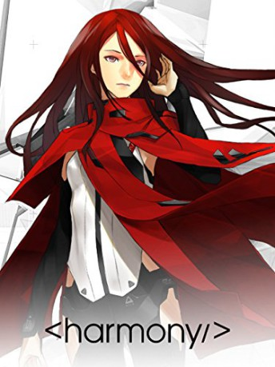

#6712 Project Itoh - Harmony
 
 IMDB-Wertung: 7.5 / 10
IMDB-Wertung: 7.5 / 10  Metascore: 0
Metascore: 0 
In an idyllic future, a group of terrorists trigger a mass suicide that shocks the globe. Government agent Tuan Kirie, can�۪t help but think their message sounds familiar-almost identical to the ideals held by a friend who�۪d supposedly killed herself years earlier. Will chasing a ghost from her past be the key to unlocking a brighter future?
Jahr: 2015
Dauer: 119 Minuten
FSK:
Land: Japan Studio: Tonspuren: DTS - ,
Untertitel: Deutsch,
Auflösung: 1080p (1920x1080) Größe: 5785 MB
Genre: Thriller, Sci-Fi, Animation/Trick
Regisseur:
Drehbuch: Albert Simonin
Soundtrack:
Darsteller:
Datei: X:\HD-Anime-Collections\Project Itoh\Project Itoh - Harmony (2015, FSK, 1920x1080).mkv seit 08.08.2017
Festplatte: Gemischt-01+Anime
 Alle Filme aus Gruppe 'HD-Anime-Collections\Project Itoh'
Alle Filme aus Gruppe 'HD-Anime-Collections\Project Itoh'